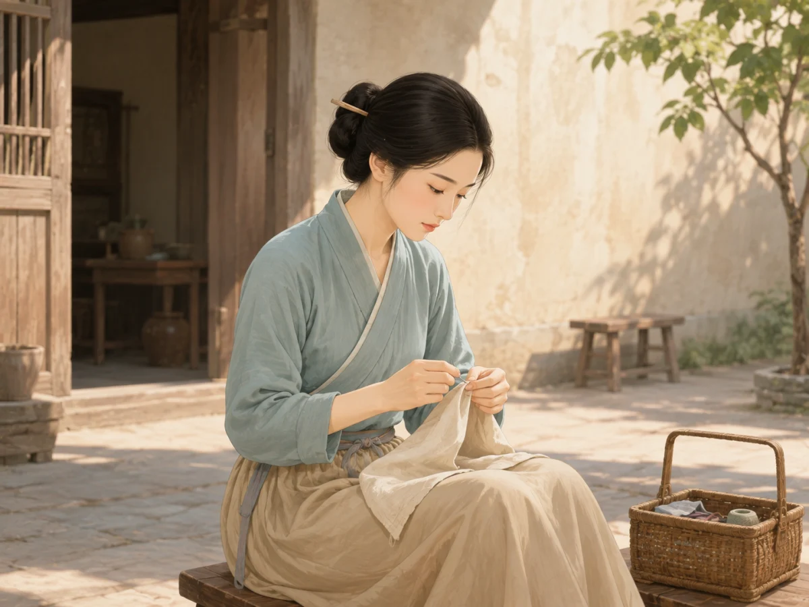

唐朝为什么有这么多时尚？
Why Did Tang China Have So Many Fashions?
Page 1
为什么我们总在讲唐朝？
Why Do We Keep Talking About the Tang Dynasty?

A tall bun lifts the hair high above the head, while gold ornaments shine between its folds.
翻开一本中国古代服装书，Táng cháo · 618年至907年的中国朝代。好像总有很多页。为什么我们总在讲唐朝？其他朝代的人难道不爱漂亮吗？
当然不是。每个朝代都有自己的时尚。不过，唐朝延续了将近三百年。三百年很长，足够让裙子、帽子、发髻和妆容改变许多次。一位生活在唐朝早期的女子，和两百年后生活在唐朝晚期的女子，不一定打扮得一样。
唐朝的大城市里还有许多来来往往的人。商人、使者、艺人和旅行者带来了不同的布料、首饰和穿衣方法。唐朝人会试试新东西，也会把它们和原来的式样搭配在一起。今天，我们还能从壁画、陶俑和出土的首饰中看到不少唐代形象。
图中的女子把头发盘得高高的，又插上了闪亮的发饰。这样大胆的造型，正是唐朝时尚常常让人记住的原因之一。
Open a book about clothing in old China, and the Táng cháo · 唐朝 · The Chinese dynasty that lasted from 618 to 907. may seem to fill page after page. Why do we keep talking about the Tang? Did people in other dynasties not care about looking good?
Of course they did. Every dynasty had its own fashions. The Tang dynasty, however, lasted for almost three hundred years. That was plenty of time for skirts, hats, hairstyles, and makeup to change again and again. A woman near the beginning of the Tang might not dress like a woman who lived two hundred years later.
People from many places came to Tang cities. Merchants, visitors, performers, and travelers brought different fabrics, ornaments, and ways of dressing. People tried new ideas and mixed them with styles they already knew. Many Tang murals, clay figures, and pieces of jewelry have also survived.
The woman in the picture wears her hair high, with bright ornaments tucked into it. Bold looks like this are one reason Tang fashion is still easy to remember.
Page 2
头发为什么越梳越高？
Why Did Hair Rise Higher and Higher?

A taller bun made room for eye-catching combs and pins. Small gold pieces on a buyao moved and flashed as the wearer walked.
唐朝早期的一些女俑梳着低低的简单发髻。后来，宫廷和富裕人家开始流行更高、更大胆的造型。高发髻在人群里很醒目，也给梳子、簪子和花饰留出了位置。一种式样流行起来以后，梳头的人又想出更新奇的做法。
这么高的发髻不一定全是真头发。有些女子会使用“yìjì · 加在真发上的假发髻，可用头发、麻布或薄木等材料制成。”，也就是加在自己头发上的假发髻。出土的义髻有的把真人头发固定在麻布上，有的用薄木做成，再涂成黑色。这样就不用全靠自己的头发，一层一层堆上去。
bùyáo · 插在发髻上的垂饰，走路时会轻轻摇动。为什么受欢迎？因为它让发型也会“动”。步摇像一支簪子插在头发里，金玉做成的小饰物从上面垂下来。人一走，它们就轻轻摇动，在光下闪一闪。精细的金玉发饰也能让别人看出，这家人有钱请手艺人做漂亮东西。
假髻能帮忙撑起造型，却不会让所有重量消失。簪子、梳子和金属饰物还是会给头上增加重量。盛装打扮当然不会像梳一个低低的简单发髻那么轻松。
Some clay figures from the early Tang have low, simple buns. Later, women at court and in wealthy homes tried taller, bolder shapes. A high bun stood out in a crowd and made room for combs, pins, and flowers. Once a style caught on, hairdressers found new ways to build it even higher.
Was all of that real hair? Not always. Some women added a yìjì · 义髻 · An added hair bun made from materials such as hair, cloth, or thin wood. to their own hair. False buns found in Tang tombs were made in different ways. Some had real hair fastened to cloth. Others were shaped from thin wood and painted black. A false bun created height without piling up layer after layer of a woman's own hair.
Why wear a bùyáo · 步摇 · A hair ornament with hanging pieces that move as the wearer walks.? Because it made the hairstyle move. The ornament was tucked into the hair like a pin, with small pieces of gold or jade hanging from it. When the woman walked, they trembled and caught the light. Fine gold and jade also showed that her family could pay skilled workers to make beautiful things.
A false bun helped hold up the style, but it did not make every bit of weight disappear. Pins, combs, and metal ornaments still added weight. Dressing for a grand occasion could not have felt as easy as wearing a low, simple bun.
Page 3
额头上的小花是什么？
What Is the Little Flower on Her Forehead?

The little flower between her eyebrows is called a huadian. It could be painted on or made from a tiny cutout placed on the skin.
唐代女子不只改变发型，也会尝试不同的妆容。她们可能使用白粉、胭脂、眉黛和唇脂，也可能在额头或眉心加上一枚小小的花形装饰。这种装饰叫“huādiàn · 古代女子贴或画在额头、眉心的小装饰。”。
花钿不一定真是一朵花。它可以是圆点、叶片或别的形状，也可以有不同颜色。有的画在脸上，有的则用剪好的小片贴上去。一点小小的颜色，就能让整张脸看起来很不一样。
宫廷宴会上的妆容可以很精细，平常做事时则可以简单得多。白粉、胭脂、眉黛和花钿放在一起，就像一个装满颜色的小盒子；用哪几样，要看这一天要去哪里。
Tang women changed more than their hair. They also tried different kinds of makeup. A woman might use face powder, color for her eyebrows and lips, and blush on her cheeks. She might also place a tiny decoration on her forehead or between her eyebrows. It was called a huādiàn · 花钿 · A small painted or applied decoration worn on the forehead..
A huadian did not have to be a flower. It could be a dot, a leaf, or another small shape, and it could come in different colors. Some were painted on. Others were tiny cutouts placed on the skin. One small spot of color could change the look of the whole face.
Makeup for a palace banquet could be very detailed, while an ordinary workday called for something simpler. A woman could choose powder, blush, eyebrow color, or a huadian, depending on where she was going that day.
Page 4
普通女子怎么梳头？
What About Ordinary Women?

A young woman from an ordinary family wears her hair in a low bun held by a wooden pin as she sews in the courtyard.
我们今天看到的许多华丽形象，来自贵族墓里的壁画和陶俑。它们很美，却更像宴会服和礼服，不是唐朝街上每位女子每天的打扮。
一位要做饭、照顾孩子、摆摊或干活的女子，更需要先把头发收好。她可以把头发在脑后盘成较低的发髻，再用簪子、梳子或布带固定。这样头发不容易挡住眼睛，也不容易在忙碌时散开。
普通女子也会爱漂亮。家里若有条件，她可以在节日或参加婚礼时插一朵花、戴一支簪子，或者擦一点胭脂。做不同事情的人也有自己的打扮。唐朝的时尚不只在宫殿里，也在每天梳头、出门和做事的生活里。
Many of the grand Tang looks we see today come from paintings and clay figures found in wealthy tombs. They are beautiful, but they look more like clothes for banquets and important events than something every woman wore each morning.
A woman who cooked, cared for children, worked at a market, or labored outdoors first needed to keep her hair out of the way. She could twist it into a lower bun at the back of her head and hold it with a pin, comb, or cloth band. Her hair was then less likely to fall into her eyes or come loose while she worked.
Ordinary women liked pretty things too. If her family could afford them, a woman might add a flower or a nice pin for a festival or wedding. She might add a little blush to her cheeks as well. Different kinds of work called for different ways of dressing. Tang fashion lived in ordinary homes and busy streets, not only inside palaces.
华丽的，也有简单的
Grand Styles and Simple Ones
金光闪闪的步摇和高高的发髻最容易吸引我们的目光。可是唐朝的街道上，也有许多梳着简单发髻、忙着过日子的女子。华丽的盛装和方便做事的日常打扮，都是唐朝生活的一部分。
Glittering buyao and towering buns are the easiest styles to notice. But Tang streets were also full of women wearing simple buns and getting on with a busy day. Grand clothes and practical everyday styles were both part of life in Tang China.